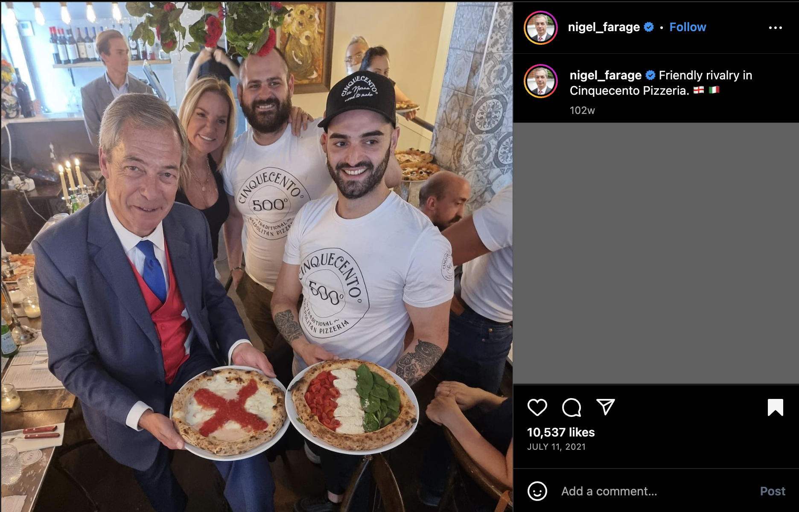
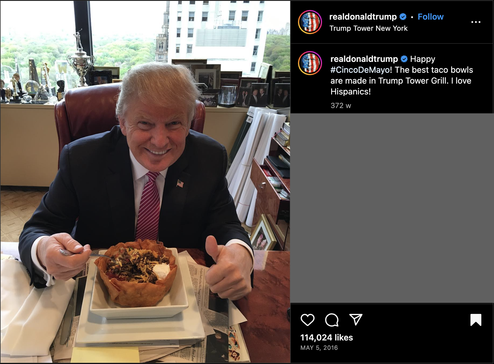
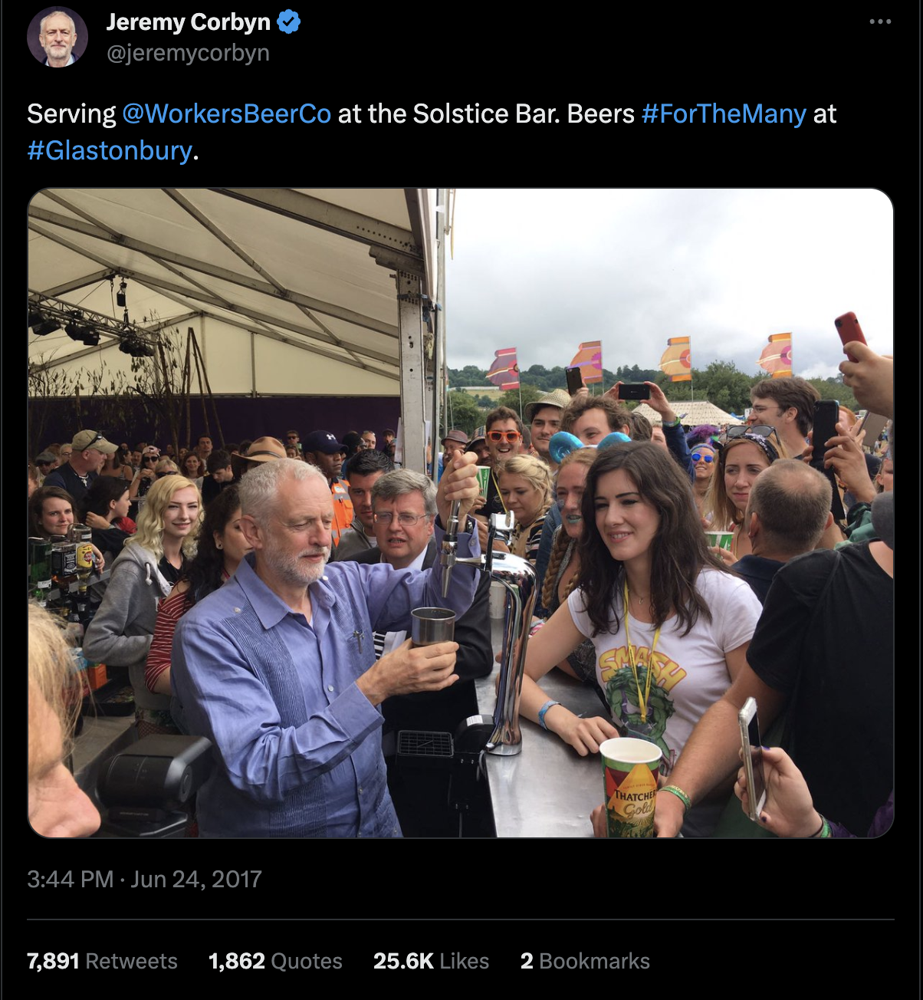
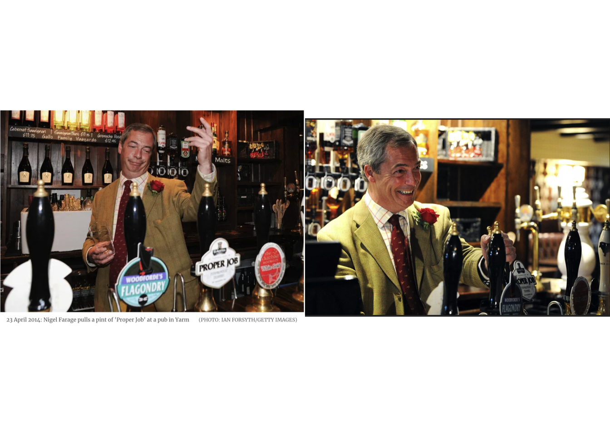
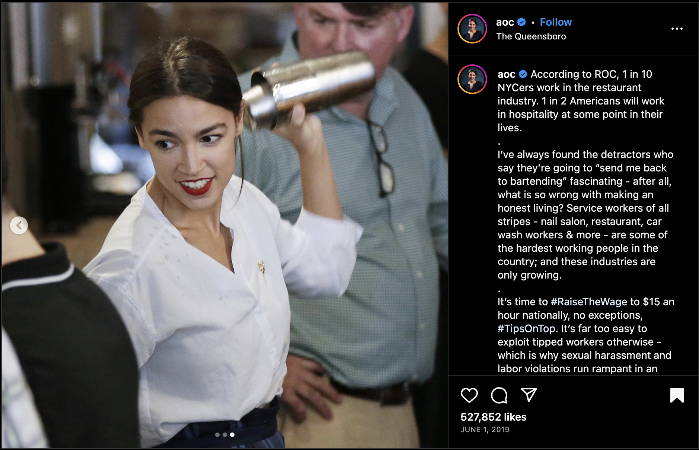
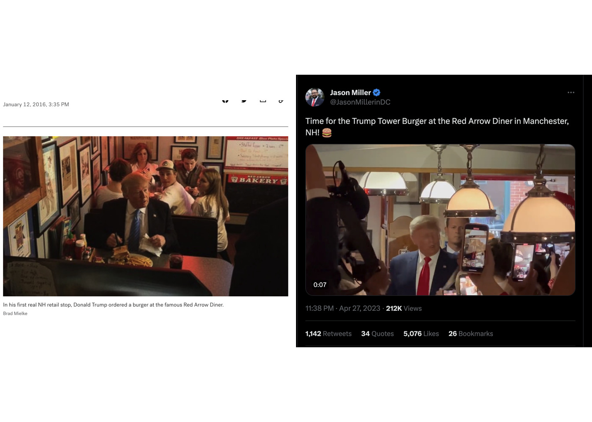

6 Deductive Thematic Analysis
6.1 Nationalism
This discussion of ‘nationalism’ in gastropopulism uses extant literature as a starting point to explore how right-wing political actors take advantage of the less scrutinised food-mode to soften and make palatable their identity and politics (Demuru, 2021, p523, García-Santamaría, 2020, p139; Starita, 2022, p101). The literature considers only the exclusionary dimension, and I analyse two congruent items. Then, I consider two items of Farage and Trump using gastropopulism as a mechanism of strategic ambiguity regarding exclusionary/inclusionary national identities. This is used to play with and subvert expectations regarding their established identities.
6.1.1 Exclusionary
6.1.1.1 Farage
Figure 6.1: Farage and the continental breakfast [P84, 27/02/2019]
P84 showing Farage at a restaurant is an example of gastropopulism used to exclude. The reaction meme formula of the post [“when x does y my reaction is z”] is an attempt at relatable humour (knowyourmeme.com, 2021), simultaneously constructing and embodying his ‘people’, demonstrating bad manners, and performing spontaneity. P84 is an excellent illustration of gastropopulism’s multimodality. With this post, Farage is using the food- and body-modes to assert his distaste of mainland Europe for comedic effect. His exaggerated expression of horror regarding the continental breakfast ‘proves’ his intrinsic repulsion from all things European. This post uses a backdrop of humour to display consistency between his personal and political tastes, thus softening and legitimising his constructed public identity (Demuru, 2021, p523). Accordingly, his dramatic, humorous gastropopulist performance aims to distinguish him from traditional political elites and align him with ordinary internet users. P84 is dated 27/02/2019, 2.5 weeks after Farage announced that he would be running under the Brexit party in the May 2019 EU elections (English, 2019). As such, this item is congruent with prior gastropopulism theory.
6.1.1.2 Trump
Figure 6.2: Trump, Oreos, and exclusion [V47, 21/01/2016; V48, 20/05/2016]
V47 [21/01/2016] shows Trump delivering a campaign speech, claiming to be boycotting Oreos due to their decision to move production from the US to Mexico. He begins to chant, “No more Oreos!”, smiling and giving a thumbs up as the crowd takes over. His delivery is more reminiscent of an observational comedian than a politician, pulling faces and gesticulating as he states, “Ah, it’s gonna be tough getting off Oreos. Well, I never liked Mexican water to be honest with you.”. In V48 [20/05/2016], Trump again addresses companies moving production out of the US to Mexico, naming Carrier (HVAC systems), Ford, and Nabisco (producer of Oreos). However, in V47 and V48 he specifically calls for a boycott of Oreos. This is because Oreos are a recognisable ‘face’ of Nabisco, and an everyday purchase, unlike cars or AC units. Thus the food mode presents particular affordances for Trump to demonstrate his belonging and the immediacy required; it will not be easy for him and his people to give up Oreos but it is necessary. Similarly to García-Santamaría’s (2020, p140) assessment of Salvini’s rejection of Turkish hazelnuts in Italian Nutella, Trump frames his dramatic rejection of Mexican-produced Oreos (and water) as protecting the American people and their jobs, shielding the racist connotations of the message. His claimed distaste for Mexican water signifies his distaste for the essence of Mexico, invoking the dual meaning of taste (Bourdieu, 1984, p99). Trump’s efforts to mobilise an Oreo boycott are congruent with extant gastropopulism literature and the theory advanced herein. Arguably more analytically interesting is how Farage and Trump utilise gastropopulism in superficially inclusive performances.
6.1.2 Inclusionary
6.1.2.1 Farage
Figure 6.3: Farage’s ambiguous pizza [P64, 11/07/2021]

Item P64 showing Farage at an Italian restaurant in London is analytically rich, illustrating the fuzziness between exclusionary and inclusionary gastropopulism. In the foreground, Farage and a restaurant worker stand side-by-side and hold pizzas made to resemble their respective performed national identity. The food mode, here, is the England flag pizza and the Italian flag pizza, both (presumably) ordered by Farage. In the linguistic mode, Farage captions this image as a “Friendly rivalry” and uses the English and Italian flag emojis. In the embodied mode, Farage wears Union Jack-coloured clothes, and holds his pizza’s plate with both hands — importantly — slightly below the ‘Italian’ pizza. He appears to be starting to smile, and looks up towards the camera. This camera perspective staging choice makes the people pictured look smaller, and performs humility (Kress and Van Leeuwen, 2020, p138). The consistent inclusion of English and Italian flags and markers of humbleness and conviviality across communicative modes point to this being an example of gastropopulism used towards inclusion rather than exclusion.
However, interestingly, the ‘Italian’ pizza has fresh, raw, light toppings (chopped tomatoes, sliced mozzarella cheese, fresh basil), whereas the ‘English’ pizza uses greasy, cooked, heavy toppings of tomato sauce and cooked cheese. This mirrors Bourdieu’s (1984, p468) antagonistic taste opposition of the dominant ‘elite’ and dominated ‘mass’. This adds another semiotic layer that blends national and class identity in a more exclusionary way, as performed through food. This demonstrates the strategic ambiguity afforded by gastropopulist performances. As such, this is an example of Farage centring food in a multimodal performance to soften his populist identity and perform authenticity and spontaneity as a ‘good natured’ and ‘fun’ persona. Whether it is exclusionary or inclusionary is in the eye of the beholder.
6.1.2.2 Trump
Figure 6.4: Trump celebrating Cinco de Mayo [P4, 05/05/2016]

Item P4 of Trump, posted 05/05/2016 and geotagged Trump Tower New York, is fascinating. Trump integrates his communicative modes to deliver a cohesive — though not necessarily convincing — performance. In the body mode, Trump sits at his desk, slightly hunched over, giving a big toothy smile and making eye contact with the camera, positioned slightly above him. His hands are horizontally aligned with the food, one giving a thumbs-up and the other holding a loaded fork. The food-mode concerns the taco bowl, visually and discursively centred in the post. The caption, “Happy #CincoDeMayo! The best taco bowls are made in Trump Tower Grill. I love Hispanics!” is plainly ridiculous. Here, Trump temporarily reconfigures ‘the people’ to include “Hispanics”, a vague term that refers to people “with ancestry from a country whose primary language is Spanish” (Alexander, 2022). He again positions himself as belonging with the people, yet still elevated, with “the best taco bowls” being made in his eponymous restaurant. In this gastropopulist performance, he proudly shares his celebration of a Mexican holiday and emphasises his enjoyment of the fusion of Mexican and US gastronomy and culture.
This post is an attempt to deflect criticism and appeal to a broader audience (including ‘Hispanic’ voters; Latinos are the largest ethnic minority in the US [Murphy, 2016]). Trump’s performance occurred during his campaign centred on his calls for a US-Mexico border wall due to his constructed threat to ‘the [true, American] people’ posed by Latin American immigrants, whom he declared “criminals and rapists” (Parker, 2016) Thus Trump’s gastropopulist performance, including his declaration that he “love[s] Hispanics!”, is an effort to publicly ‘balance’ his otherwise vitriolic messaging regarding Latin American people. The taco bowl constructs Trump’s private taste as inclusive, inviting parasocial illusions of his personal role. This transparent attempt at strategic ambiguity is intended to offer the audience a veneer of plausible deniability regarding the ‘true’ nature of Trump’s identity. Eagle-eyed readers may have noticed that V48, discussed in the ‘exclusionary’ section, is dated 20/05/2016 — just two weeks after this Cinco de Mayo performance. This illustrates the ephemeral nature of gastropopulism.
6.1.3 Nationalism discussion
Whilst the ‘exclusionary’ discussion is congruent with gastropopulism theory, conflating this aspect with gastropopulism is theoretically and analytically unsatisfying. The images analysed in the ‘inclusionary’ discussion demonstrate the performative and ad-hoc nature of gastropopulism, here as an ostensible subversion of the actors’ wider political messages and identity. This is used to deflect criticism of their exclusionary discourse and to appeal to a broader audience, softening their public identity. However, this is a balancing act to avoid alienating their ‘people’ (Hai-Jew, 2022, p291) and piercing their performed authenticity. This “strategic ambiguity” facilitates parasocial illusions of the actor that legitimise their performed authenticity (Hai-Jew, 2022, p291). This demonstrates the performative, rather than ideological, essence of gastropopulism. Adhering to the exclusionary/inclusionary dichotomy misses significant insights.
6.2 Class
This section examines how political actors embody class solidarity in gastropopulist performances through assuming a pub/bar worker role — with the exception of Trump. Corbyn, Farage, and AOC serve drinks to the people, making tangible their political service to the people. By temporarily assuming this front-facing hospitality worker role, the actors embody their class solidarity and belonging. Given that the crux of each episode of ‘The Apprentice’ was ‘billionare boss’ Trump barking the catchphrase, “You’re fired!”, his lack of low-paid hospitality worker performances is perhaps unsurprising. Instead, Trump performs embodied class solidarity through his menu choices.
Moreover, this section dissects what it means for a gastropopulist performance to be viewed as credible. This considers Goffman’s (1959, p38) position that “sometimes when we ask whether a fostered impression is true or false, we really mean to ask whether or not the performer is authorised to give the performance in question, and we are not primarily concerned with the actual performance itself”. Accordingly, this section explores the cyclical nature of constructed identity - gastropopulist performances - constructed identity.
6.2.1 Corbyn
Figure 6.5: Corbyn at Glastonbury [P110, 24/06/2017]

P110 shows Corbyn’s performance of pulling a pint at the 2017 Glastonbury music festival, before giving a speech on the biggest stage. In the linguistic mode, Corbyn captions the image with two references to his belonging to ‘the people’. The tagged ‘WorkersBeerCo’ is owned by a London-based Trade Union Council; its workers are volunteers raising money for grassroots causes (Workers Beer Company, 2023). “Beers #ForTheMany” repurposes Corbyn’s Labour slogan and plays into British binge drinking culture. This gastropopulist performance may have been designed to pre-empt criticism of his celebrity politician role corrupting his political role. Here, Corbyn attempts to convey that despite his political celebrity resulting in him speaking on the main stage at the UK’s biggest festival, he still belongs “Serving” and interacting with the people. That is, to justify his presence at the festival as for work, he visibly performs physical labour, serving drinks to the people, with the money generated going to on-message causes. In Goffman’s (1959, p20) terms, this is a dramatic realisation of his populist identity.
However, the performed authenticity is undermined by both the body mode (awkward grip on the lever, and poor technique will result in excessive head) and the food mode (no beer is actually being poured), breaking his worker performance by conveying his unfamiliarity with the task at hand. Recall how Farage purposefully uses alcohol brands to represent political figures; P110 (accidentally) foregrounds a ‘Thatchers Gold’ cider cup — not a statement that Corbyn would likely endorse! Though individually minor, together these breaks can easily derail the impression management attempt (Goffman, 1959, p36). This suggests that Corbyn does not care to maximise the affordances of individual communicative modes to build a cohesive and convincing gastropopulist performance. This dovetails pleasingly into my examination of Farage pulling a pint.
6.2.2 Farage
Figure 6.6: Farage and Proper Job IPA [P120a, P120b, 23/04/2014]

P120a and P120b [23/04/2014] show Farage pulling a pint of ‘Proper Job’ IPA in a North Yorkshire pub on St. George’s Day [England’s patron saint], campaigning for the May 2014 EU Elections. Instantly, we can see the difference in how Farage leverages individual communicative modes and harnesses the wider political and cultural context to build a cohesive and credible gastropopulist performance. In both items, Farage is highly expressive. In P120a, his facial expression, hand gesture, and clutched empty glass give him the air of a drunk who has snuck behind the bar, rather than the leader of a popular political party. In P120b, he looks more coherent, smiling widely as he confidently pulls a pint of ‘Proper Job’. Both items suit his constructed public identity of a bon vivant who is not like other politicians. Here Farage self-presents as a unpretentious and rare politician who will do a ‘proper job’, even if at first he seems out of place. As such, by spending (some of) St. George’s Day enthusiastically serving pints at a local pub, he emphasises his class belonging with his people in this gastropopulist performance. While the red rose on his lapel symbolises England, this is a remarkably subtle display of national identity from the man whom we last saw going for a casual meal dressed like the Union Jack. Accordingly, I take this gastropopulist performance as primarily conveying class, rather than national, belonging.
This performance raises another interesting point regarding Farage’s use of gastropopulism. Farage’s long-term self-branding with beer is extremely strategic and image-conscious — like an ‘elite’ politician. Yet image-conscious politicians are assumed to expend effort on looking good, polished, and in control (Diehl, 2017, p7). Thus, as Farage’s image-consciousness intentionally rejects such aesthetics, the effort he expends on constructing his identity is easily overlooked. As such, unflattering shots, like looking drunk with a double chin [P120a], help foster parasocial illusions about his unpretentious, fun, ‘real’ identity. Farage has crafted his gastropopulist public identity over decades, and is an expert at leveraging the affordances of communicative modes to convey his intended message. Now, I will analyse how AOC convincingly performs class authenticity to construct her gastropopulist identity.
6.2.3 AOC
Figure 6.7: AOC returns to bartending [P46, 01/06/2019]

AOC’s employment history as a bartender is frequently referenced by herself and others — including Trump, who in April 2019 described her as a “young bartender” who has ‘establishment’ Democrats “petrified of her” (Relman, 2019). Less than two months later, AOC gave a high-profile performance of her bartender role in her district’s Queensboro bar, Queens NY. P46 [01/06/2019] is an Instagram post containing two images and one 11-second video of this performance. These were taken during a one-hour publicity event supporting a bill co-sponsored by AOC to raise the national minimum wage to $15 (Wang, 2019). The in-person audience was mostly constituted of nail salon and restaurant workers (wearing matching ‘One Fair Wage’ t-shirts) and press actors (Wang, 2019). In the 11-second video, AOC uses her left arm to vigorously shake a cocktail shaker, in a repeated fluid and confident motion from above her head to her chest level, before removing the shaker’s lid. In the images and video, she does not acknowledge the camera at any point, instead speaking with ‘customers’ and ‘colleagues’. In the third image, a ‘candid’-style shot, her gaze is directed at her colleague, her arm is in motion with a cocktail shaker and drops of liquid are visible on the shoulder of her white shirt.
This bartender role performance is highly effective at constructing her gastropopulist identity. While her use of statistics in the caption (“1 in 10 NYCers work in the restaurant industry. 1 in 2 Americans will work in hospitality […]”) supports her position as belonging to ‘the people’, this is most convincingly achieved through her embodiment of the hospitality worker role that has discursively contributed so much to her public identity. While “detractors”, like Trump, have used this to undermine her politician role, here she artfully takes control of the narrative to re-integrate the two. She comfortably slips between her bartender and politician roles, performing authenticity of both, and consequentially, her wider public identity. Furthermore, staging the performance at a bar in her hometown and district emphasises her personal roots and her proximity to her constituents. Ultimately, this performance conveys that she is not ashamed or above her working class background (professional, geographic, personal) in a way that constructs a cohesive and ‘legitimate’ gastropopulist identity.
6.2.4 Trump
Figure 6.8: Trump’s visits to the Red Arrow Diner [P117, 12/01/2016; V53, 27/04/2023]

For context, the Red Arrow Diner in New Hampshire (NH), USA is historically embedded in American gastropolitical culture across the ideological spectrum, visited by many Presidential hopefuls (He, 2020). P117 [12/01/2016] shows Trump’s first visit, where he ordered ‘The Newton’: a beef patty bookended by two grilled cheese sandwiches instead of a bun, a fist-sized ball of deep-fried macaroni cheese, a ladle of cheese sauce, served with fries (Mielke, 2016; Red Arrow Diner, 2023a). Two weeks after Trump won the NH primary, the Red Arrow Diner (2016) announced the “Trump Tower Burger” – the Newton rebranded. This speaks to the perceived credibility of Trump’s gastropopulist identity, which is not only constructed by himself but by others. As a result, Trump has significant freedom in the consistency and content of his gastropopulist performances. Arguably, this helps explain his reduction in gastropopulist performances during 2020, as he may have viewed this identity as sufficiently established. However, for reasons far beyond the scope of this dissertation, his 2024 campaign is seemingly re-embracing gastropopulism as a tried-and-tested way to construct a familiar and “entertaining” public identity.
V53 [27/04/2023] shows Trump’s return to the diner, ordering the Trump Tower burger and a milkshake (Red Arrow Diner, 2023b). In music, ‘hyperpop’ refers to pop music pushed to its extremes: slick, exaggerated, highly-processed and tongue-in-cheek manipulation of the pop genre’s tropes and motifs (Cafolla, 2022). I posit the ‘Trump Tower’, née Newton, burger as hyperfastfood; it simultaneously satirises and pays homage to ideas of ‘all-American’ fast food and excess, to create a (potentially delicious) maximalist monstrosity. Momentarily putting aside the name, the burger itself is pure hedonistic defiance of upper-class tastes, manners, health concerns, and limits. As such, it encapsulates gastropopulism: it is a prop that combines commonly consumed foods (belonging) in a way that is impossible to eat with dignity and grace (manners), and is extraordinarily unhealthy (immediacy). Incorporating this monstrosity is to perform sharing the people’s taste “without fear of possible unhealthy consequences” (Diehl, 2017, p13). Topping it off with a milkshake is frankly obscene.
However, the burger’s incorporation is either implied [P117] or absent [V53]. We never actually see how much he eats, or his reaction. Yet, there is a degree of parasocial trust regarding the working-class affinity of Trump’s dietary habits and tastes, whereby the audience fill in the blanks of the performance from their pre-existing perceptions. In Goffman’s (1959, p38) terms, Trump is authorised to give gastropopulist performances, so individual instances are readily accepted without much scrutiny.
6.2.5 Discussion of Class
Goffman’s (1959, p38) work has been illuminating for exploring how gastropopulism can perform class belonging, and the reciprocal dynamics of the actors’ constructed identities and gastropopulist performances in their impression management. Trump’s gastropopulist reputation precedes him, so his performances are observed through this lens. Similarly, Farage has crafted his gastropopulist identity over decades, and his reliance on alcohol imbues his performances with a level of freedom and assumed credibility. This cultivated authorisation is not exclusive to right-wing actors. While AOC only entered the public eye in 2018, gastropopulism has played a careful, consistent, and crucial role in the construction of her public identity. Conversely, Corbyn’s sudden adoption of gastropopulism in response to his newfound celebrity politician role invites more scrutiny, rather than granting him authorisation. This weakens the credibility of his gastropopulist performances, making them more vulnerable to perceived fractures. This deductive thematic analysis chapter has critically engaged with the central themes of gastropopulism literature to develop our understanding of how gastropopulist performances and identities are constructed for — and sometimes by — observers.